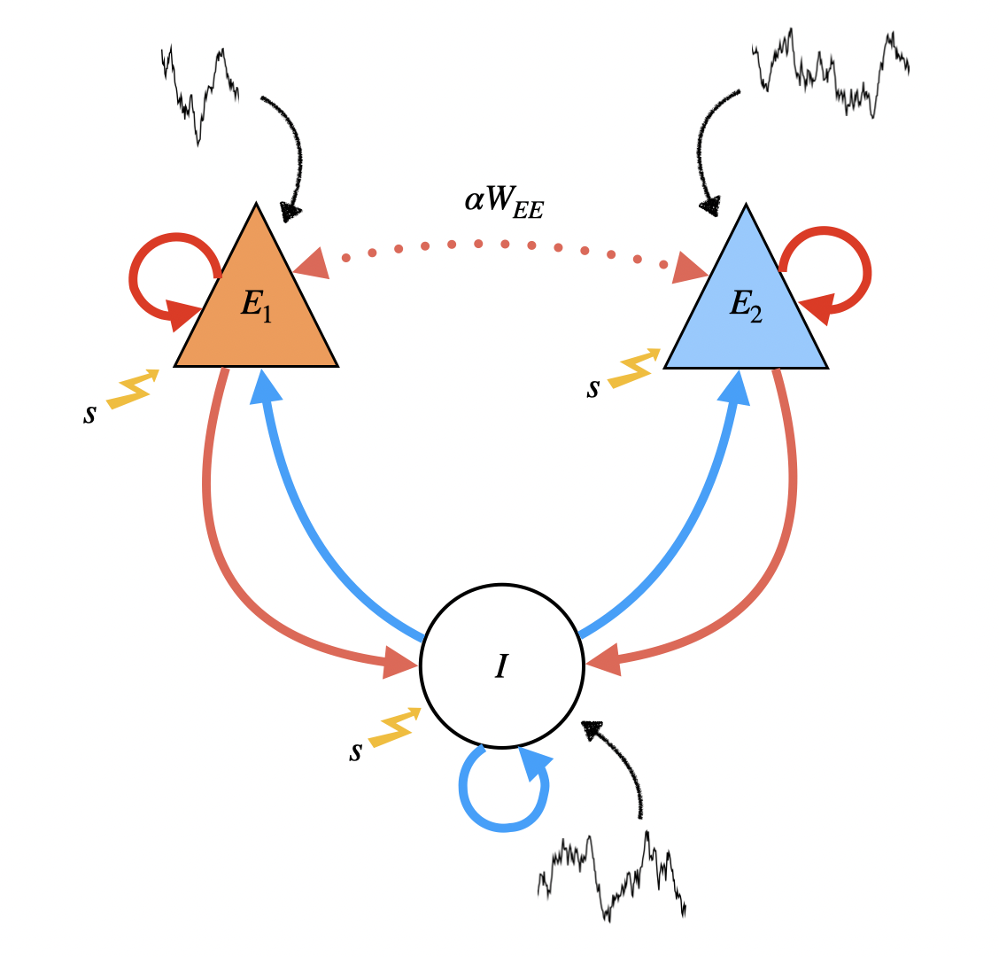

Three unit rate model ¶
Three-unit model. ¶
Neurons \(\set{E_1,E_2,E_I}\) evolve with dynamics described by
^0898d9
where:
- \(\xi_i(t)\) are mutually independent white noise processes,
- \(\tau_i\) are time constants
- \(\sigma_i\) is the noise magnitude
- \(\mu_i\) is stimulus input to \(i\)
- \(\bra{\cdot}_+ : \mathbb{R} \to \mathbb{R}\) is defined via \(\bra{\cdot}\equiv \max\set{\cdot, 0}\)
We may drop the \(\bra{\cdot}_+\) under the assumption that the threshold is never sampled for sufficiently strong inputs.
Weak cross-excitatory connection. ¶
To implement a weak \(E_1 \leftrightarrow E_2\) connection, we introduce a parameter \(\alpha \in \pa{0,1}\) which scales inter-excitatory connections \(W_{E_1E_2}\) , \(W_{E_2E_1}\) with respect to the intra-excitatory connections \(W_{E_1E_1}, W_{E_2E_2}\) respectively. Refer to the following sketch of the network setup for the three unit \(\set{E_1,E_2,I}\) case:

In vector form, the dynamical equations are
which can be written compactly as
In the absence of noise, given
\(\mathbf{\bar{r}}\)
we can solve for
\(\pmb{\mu}\)
at the steady state (i.e.,
\(\mathbf{\dot{r}}=0\)
)
Let
\(\delta \mathbf{r} = \mathbf{r}-\mathbf{\bar{r}}\)
denote the rates' fluctuations about their steady states. Then for sufficiently small noise,
\(\delta \mathbf{r}\)
is an Ornstein-Uhlenbeck process given as the solution to the linear SDE
^e90dac
Four-unit model. ¶
The modeling setup for the three-unit network generalizes to \(N_E\) excitatory and \(N_I\) inhibitory neurons for a total of \(N = N_E + N_I\) neurons. We will also be considering an \(N=4\) neuron model with \(\set{E_1,E_2,I_1,I_2}\) as the neurons.
![[img/sketch-four_unit_setup.png]]
The dynamical equations for the four-unit model are identical to those of the three-unit model, only now we have additional variables to account for each of \(I_1, I_2\) . Note that the weight matrix is
Stability analysis ¶
^6c6a55
For simplicity, assume \(\boldsymbol{\tau}=\mathbf{1}\) and \(\boldsymbol{\mu} = 0\) . Assume there is no noise in the system, so that we are solving
Since this is a linear equation, we seek solutions of the form
Then:
that is,
\(\lambda\)
must be an eigenvalue of
\(-\mathbf{1} + \mathbf{W}\)
, and
\(\mathbf{v}\)
a corresponding eigenvector. The eigenvalues are obtained by solving